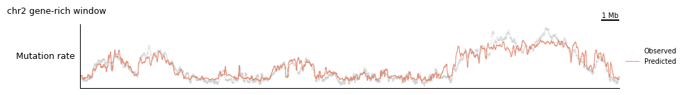
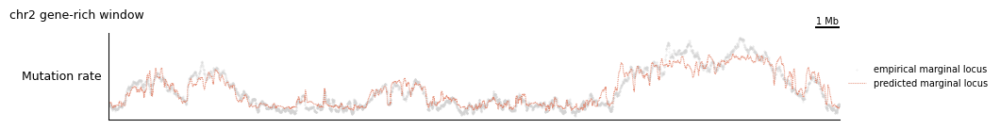
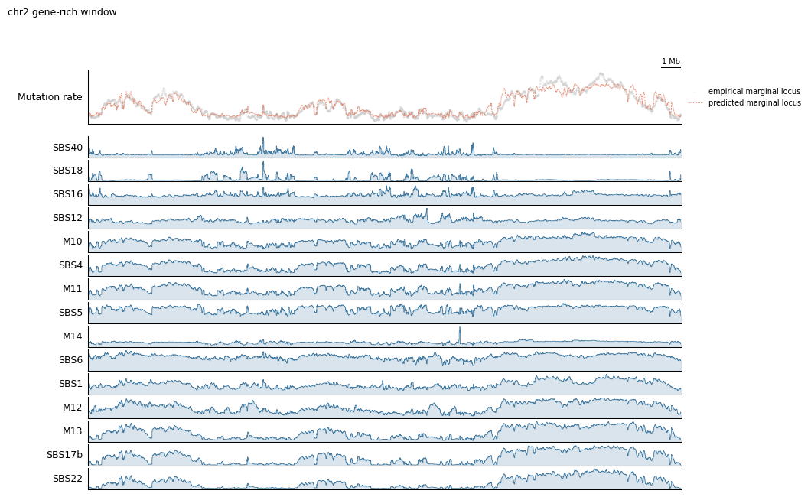
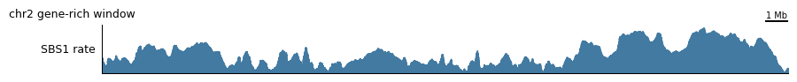
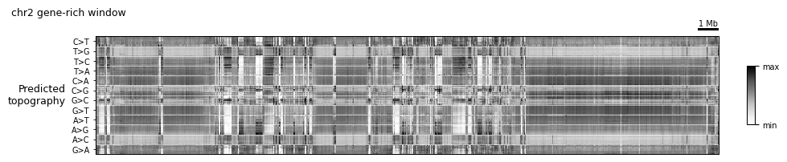
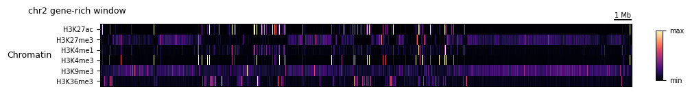
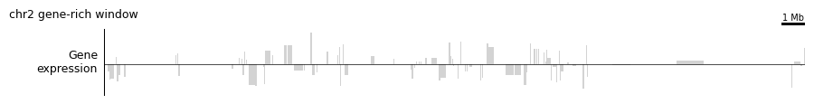
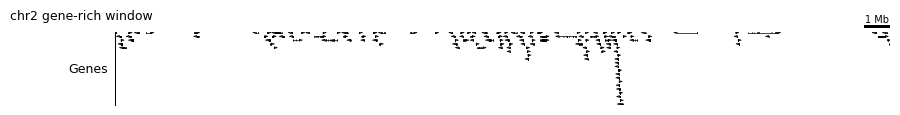
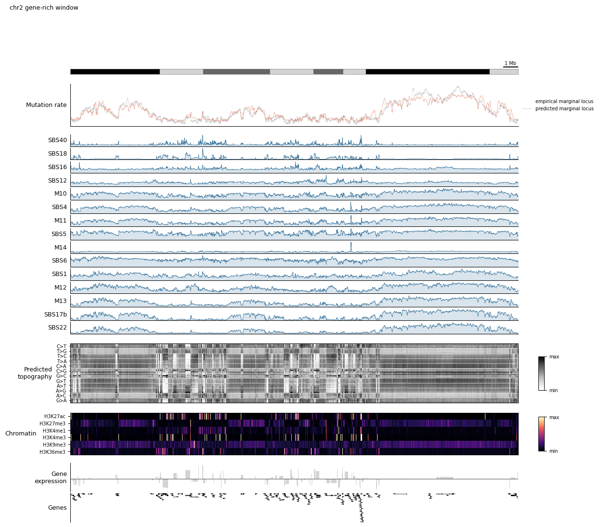
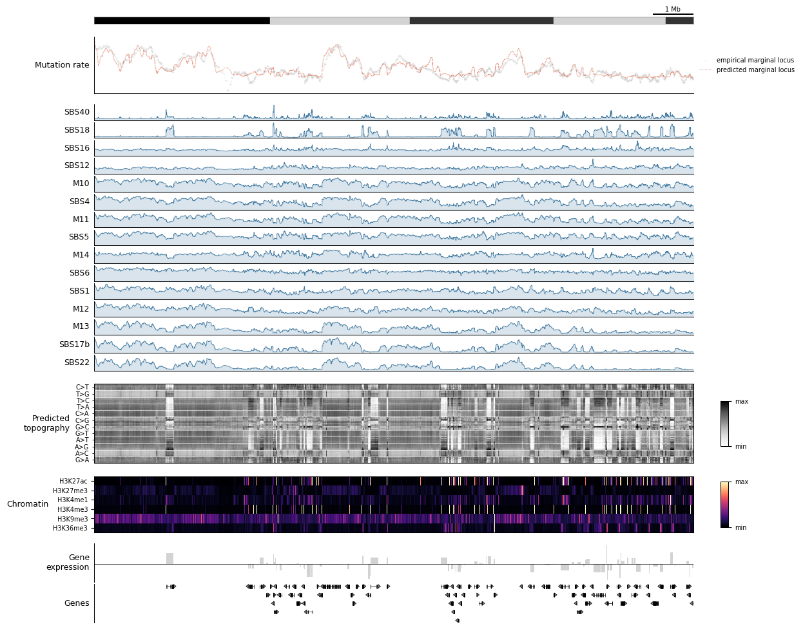

Tutorial 6: Genome-browser plotting with a trained model¶
Tutorial 2 introduced the composable track_plot API for drawing genome-browser-style figures from a G-Tensor. Tutorial 4 touched on two model-aware composites (plot_marginal_observed_vs_expected and plot_component_rates). This tutorial is a comprehensive tour of everything that becomes available once you have a trained topographic model annotating your G-Tensor — per-component rates, the topography heatmap, strand-aware gene-expression tracks, gene annotations, and a full
hypothesis-generation dashboard you can point at any region of the genome.
We won’t re-teach the primitives from Tutorial 2 (scatterplot, line_plot, fill_plot, stack_plots, pipeline, select, make_view, plot_view) — glance back at that tutorial if anything feels unfamiliar.
Prerequisites¶
MuTopia package installed
The shared tutorial data bundle from the Zenodo record unpacked to
tutorial_data/— see Tutorial dataA trained model at
tutorial_data/pretrained_model.pkl(shipped in the bundle; also produced by Tutorial 3)A cytoband file at
tutorial_data/cytoBand.txtand the MANE GTF attutorial_data/MANE.GRCh38.v1.3.ensembl_genomic.gtf(both shipped in the bundle)
What we’ll build¶
Observed vs predicted — peel a composite track apart into primitives and back
Per-component rates — ordered, labeled, hierarchically clustered
The topography heatmap —
TopographyTransformer+plot_topography+ empirical overlayFeature context — heatmaps of chromatin features, strand-aware expression, gene annotations
A reusable dashboard — one config, three regions, zero copy-paste
Setup¶
Load the model, annotate the dataset, and rename components up front. Renaming is optional but makes every subsequent plot (and every legend) readable — once we’ve labeled components SBS1, SBS5, etc., everything downstream inherits those names.
[1]:
import numpy as np
import matplotlib.pyplot as plt
import mutopia.analysis as mu
import mutopia.plot.track_plot as tr
model = mu.load_model('tutorial_data/pretrained_model.pkl')
data = mu.gt.load_dataset('tutorial_data/Liver.nc', with_samples=False)
data = model.annot_data(data, threads=4, calc_shap=False)
components = mu.gt.list_components(data)
/Users/allen/miniconda3/envs/mutopia-model/lib/python3.12/site-packages/tqdm/auto.py:21: TqdmWarning: IProgress not found. Please update jupyter and ipywidgets. See https://ipywidgets.readthedocs.io/en/stable/user_install.html
from .autonotebook import tqdm as notebook_tqdm
INFO Mutopia JIT-compiling model operations ...
INFO Mutopia Setting up dataset state ...
INFO Mutopia Done ...
INFO Mutopia Setting model to prediction mode.
Estimating contributions: 100%|██████████████████████████████████| 185/185 [00:01<00:00, 152.36it/s]
INFO Mutopia Added key to dataset: "contributions"
INFO Mutopia Added keys to dataset: Spectra/spectra, Spectra/interactions, Spectra/shared_effects
INFO Mutopia Added key: "component_distributions"
INFO Mutopia Added key: "component_distributions_locus"
INFO Mutopia Added key: "predicted_marginal"
INFO Mutopia Added key: "predicted_marginal_locus"
Reducing samples: 100%|██████████| 184/184 [00:27<00:00, 6.76it/s]
INFO Mutopia Added key: "empirical_marginal"
INFO Mutopia Added key: "empirical_marginal_locus"
Inspect the learned spectra (Tutorial 4 covers this in depth) and assign biologically meaningful names in the same order. For a 15-component liver model, the dominant signatures typically line up with SBS1 (clock-like CpG deamination), SBS5 (clock-like), SBS16 (liver-specific), SBS22 (aristolochic acid), SBS40, and a handful of low-activity processes. Use mu.pl.plot_signature_panel(data) to decide the mapping for your own model.
Tip: If you’re not ready to commit to a mapping yet, skip this cell — every plot below also works with the raw
M0..M14labels.
[2]:
# Replace with the mapping that makes sense for your model.
# Check against mu.pl.plot_signature_panel(data) first!
new_names = [
'SBS1', 'SBS5', 'SBS16', 'SBS22', 'SBS40',
'SBS12', 'SBS18', 'SBS4', 'SBS17b','SBS6',
'M10', 'M11', 'M12', 'M13', 'M14',
]
data = mu.gt.rename_components(data, new_names)
components = mu.gt.list_components(data)
Make a single GenomeView we can pass into every configuration in this tutorial. We’re picking a gene-rich 5 Mb window on chr2; Step 5 will swap in other views without touching the config.
[3]:
view = tr.make_view(data, 'chr2:55_000_000-85_000_000', title='chr2 gene-rich window')
INFO Mutopia Found 4338/388247 regions matching query.
1. Observed vs predicted: primitives → composite¶
plot_marginal_observed_vs_expected is the single most useful model-aware track: it overlays the empirical mutation rate (from your samples) on the model’s locus-level prediction. Before we use the composite, let’s build it by hand out of primitives so the machinery is transparent.
The two variables we need are both added to data by model.annot_data:
empirical_marginal_locus— observed mutations per locus, summed over context and configurationpredicted_marginal_locus— model-predicted rate per locus
view.smooth(n) is a pipeline step that convolves along the genomic axis of any selected variable.
[4]:
manual_config = lambda view, scalebar_bp: (
tr.scale_bar(scalebar_bp, scale='mb'),
tr.stack_plots(
tr.scatterplot(
tr.pipeline(
tr.select('empirical_marginal_locus'),
view.smooth(20),
tr.renorm,
),
s=0.1, alpha=0.5, color='lightgrey', label='Observed',
),
tr.line_plot(
tr.pipeline(
tr.select('predicted_marginal_locus'),
view.smooth(10),
tr.renorm,
),
color=mu.pl.categorical_palette[1],
linewidth=0.75, alpha=0.8, label='Predicted',
),
label='Mutation rate',
legend=True,
height=1.25,
),
)
tr.plot_view(manual_config, view, scalebar_bp=1_000_000, width=10)
None

That’s five lines per track — workable, but it gets repetitive across many regions. The composite does exactly this, with sane defaults:
[5]:
composite_config = lambda view, scalebar_bp: (
tr.scale_bar(scalebar_bp, scale='mb'),
tr.tracks.plot_marginal_observed_vs_expected(view, smooth=20, pred_smooth=10, height=1.25),
)
tr.plot_view(composite_config, view, scalebar_bp=1_000_000, width=10)
None

2. Per-component mutation rates¶
Once the model has decomposed the mutation rate into k components, each component has its own locus-wise density: component_distributions_locus[component=<name>]. plot_component_rates returns one fill_plot per component, which you can splat into the config tuple.
The real value comes from order_components, which performs hierarchical clustering so visually similar components sit next to each other.
[6]:
ordered = tr.order_components(data)
print('Ordered components:', ordered)
rates_config = lambda view, scalebar_bp: (
tr.scale_bar(scalebar_bp, scale='mb'),
tr.tracks.plot_marginal_observed_vs_expected(view, height=1),
tr.spacer(0.15),
*tr.tracks.plot_component_rates(view, *ordered, smooth=10, height=0.4),
)
tr.plot_view(rates_config, view, scalebar_bp=1_000_000, width=10)
None
Ordered components: ['SBS40' 'SBS18' 'SBS16' 'SBS12' 'M10' 'SBS4' 'M11' 'SBS5' 'M14' 'SBS6'
'SBS1' 'M12' 'M13' 'SBS17b' 'SBS22']

If you only care about one component — say you want to zoom in on SBS1 — you can grab it directly via select’s keyword selection. Any keyword passed to select is forwarded to xarray.DataArray.sel, so you can pick along any named dimension:
[7]:
single_config = lambda view, scalebar_bp: (
tr.scale_bar(scalebar_bp, scale='mb'),
tr.fill_plot(
tr.pipeline(
tr.select('component_distributions_locus', component='SBS1'),
view.smooth(30),
tr.renorm,
),
label='SBS1 rate',
color=mu.pl.categorical_palette[0],
height=0.75,
),
)
tr.plot_view(single_config, view, scalebar_bp=1_000_000, width=10)
None

3. The topography heatmap¶
The topography is MuTopia’s marquee view: a heatmap whose rows are (mutation type × trinucleotide context × orientation) and whose columns are genomic loci. Each cell is the log-ratio of the predicted per-context mutation rate at that locus to the locus’s overall predicted rate. Rows are hierarchically ordered so patterns associated with the same underlying process land together.
TopographyTransformer is a lightweight, scikit-learn-style transformer: .fit(data) computes the row ordering and per-row mean/std once over the whole dataset, and .transform(view) standardizes a slice on demand. plot_topography is the heatmap wrapper.
Fit once, reuse everywhere — never refit inside a config.
[8]:
topography = tr.TopographyTransformer(data_key='predicted_marginal').fit(data)
topo_config = lambda view, scalebar_bp: (
tr.scale_bar(scalebar_bp, scale='mb'),
tr.tracks.plot_topography(topography, height=2.0),
)
tr.plot_view(topo_config, view, scalebar_bp=1_000_000, width=10)
None

4. Feature context¶
The model tracks above tell you what is happening with mutagenesis. To understand why, you usually want to layer in the underlying genomic features (chromatin, expression, genes).
4a. Chromatin feature heatmap¶
feature_matrix stacks any number of features into a (feature, locus) matrix, which heatmap_plot can render with optional hierarchical row clustering. clip trims outliers before plotting.
[9]:
chromatin_features = ['H3K27ac', 'H3K27me3', 'H3K4me1', 'H3K4me3', 'H3K9me3', 'H3K36me3']
chromatin_config = lambda view, scalebar_bp: (
tr.scale_bar(scalebar_bp, scale='mb'),
tr.heatmap_plot(
tr.pipeline(
tr.feature_matrix(*chromatin_features),
tr.clip(0.02, 0.98),
tr.apply_rows(tr.minmax_scale),
),
palette='magma',
row_cluster=False,
label='Chromatin',
yticks=True,
height=1.25,
),
)
tr.plot_view(chromatin_config, view, scalebar_bp=1_000_000, width=10)
None

4b. Strand-aware gene expression¶
plot_gene_expression_track is a composite that combines the GeneExpression magnitude feature with the GeneStrand feature (+1 / −1 / 0), producing a signed bar plot. With log1p=True it applies a symmetric log transform so both strongly-expressed strands are visible at once.
[10]:
expression_config = lambda view, scalebar_bp: (
tr.scale_bar(scalebar_bp, scale='mb'),
tr.tracks.plot_gene_expression_track(
expression_key='GeneExpression',
strand_key='GeneStrand',
log1p=True,
height=1.0,
),
)
tr.plot_view(expression_config, view, scalebar_bp=1_000_000, width=10)
None

4c. Gene annotation¶
plot_gene_annotation drops in a real GTF-backed gene track (built on top of pygenometracks), which is the quickest way to make a figure biologically interpretable.
[11]:
genes_config = lambda view, scalebar_bp: (
tr.scale_bar(scalebar_bp, scale='mb'),
tr.tracks.plot_gene_annotation(
gtf='MANE.GRCh38.v1.3.ensembl_genomic.gtf',
label='Genes',
height=1.0,
),
)
tr.plot_view(genes_config, view, scalebar_bp=1_000_000, width=10)
None
INFO Mutopia Loading track data from MANE.GRCh38.v1.3.ensembl_genomic.gtf ...
100%|██████████| 19352/19352 [00:05<00:00, 3382.24it/s]
DEBUG:pygenometracks.tracks.GenomeTrack:ylim 44.779999999999994,-0.08
DEBUG:pygenometracks.tracks.GenomeTrack:ylim (np.float64(44.779999999999994), np.float64(-0.08))

5. The full dashboard¶
Everything above has been a single-purpose figure. The payoff of the configuration-as-function pattern is that you can glue all of these tracks into one dashboard, then point it at any region of the genome with zero changes.
The dashboard below stacks, top to bottom:
Scale bar + ideogram (orientation)
Observed vs predicted mutation rate (model fit quality)
Per-component rates (which signature is active where)
Predicted topography heatmap (per-context fine structure)
Chromatin heatmap (epigenomic state)
Strand-aware gene expression
Gene annotation
[12]:
dashboard = lambda view, scalebar_bp: (
tr.scale_bar(scalebar_bp, scale='mb'),
tr.ideogram('tutorial_data/cytoBand.txt'),
tr.spacer(0.2),
tr.tracks.plot_marginal_observed_vs_expected(view, height=1.25),
tr.spacer(0.15),
*tr.tracks.plot_component_rates(view, *ordered, smooth=5, height=0.35),
tr.spacer(0.2),
tr.tracks.plot_topography(topography, height=1.75),
tr.spacer(0.2),
tr.heatmap_plot(
tr.pipeline(
tr.feature_matrix(*chromatin_features),
tr.clip(0.02, 0.98),
tr.apply_rows(tr.minmax_scale),
),
palette='magma',
label='Chromatin',
yticks=True,
height=1.25,
),
tr.spacer(0.15),
tr.tracks.plot_gene_expression_track(height=0.85),
tr.tracks.plot_gene_annotation(
gtf='MANE.GRCh38.v1.3.ensembl_genomic.gtf',
label='Genes',
height=0.85,
),
)
tr.plot_view(dashboard, view, scalebar_bp=1_000_000, width=12)
None
DEBUG:pygenometracks.tracks.GenomeTrack:ylim 44.779999999999994,-0.08
DEBUG:pygenometracks.tracks.GenomeTrack:ylim (np.float64(44.779999999999994), np.float64(-0.08))

Now the real demonstration: swap the view, keep the dashboard. Each of these calls produces a completely different figure from the same dashboard function. This is the workflow pattern to steal — build a dashboard once, then fly around the genome.
[13]:
# A heterochromatic desert on chr1 — expect low predicted rate, sparse genes.
view_desert = tr.make_view(data, 'chr1:80_000_000-95_000_000')
tr.plot_view(dashboard, view_desert, scalebar_bp=1_000_000, width=12)
None
INFO Mutopia Found 2235/388247 regions matching query.
DEBUG:pygenometracks.tracks.GenomeTrack:ylim 10.28,-0.08
DEBUG:pygenometracks.tracks.GenomeTrack:ylim (np.float64(10.28), np.float64(-0.08))

Appendix: escape hatches¶
The composites above cover the common cases, but you’ll eventually want to drop in something the library doesn’t provide. Three ways out:
``tr.custom_plot(fn, height=…)`` — wrap a raw function
fn(ax, *, dataset, start, end, idx, interval, **kw)and stick it in a config like any other track. This is how every composite is built internally.``tr.columns(a, b, …, width_ratios=[…])`` — put tracks side-by-side instead of stacked. Useful for a narrow summary column next to a wide genome track. Pass
...(theEllipsis) as a placeholder to leave a column blank.``tr.static_track(track_type=’bigwig’, file=’path/to/file.bw’, height=0.5, **props)`` — wraps an arbitrary
pygenometrackstrack. Drops any BigWig/BED/GTF from disk straight into your figure without going through the G-Tensor at all.
Here’s a minimal custom_plot example that shades the top 5% mutated loci in the current view. Notice that MuTopia passes the full dataset, the start/end coordinates of each locus in the view, and the integer idx selector — that’s the contract every track obeys.
Next steps¶
Tutorial 4 — signature spectra, SHAP feature importance, component interaction matrices. Everything here is a per-region view; Tutorial 4 covers the global view.
Tutorial 5 — apply the same trained model to annotate your own VCFs with per-mutation component posteriors.
Dig into
mutopia/plot/track_plot/tracks.py— every composite in this tutorial is ~20 lines and a good template for building your own.